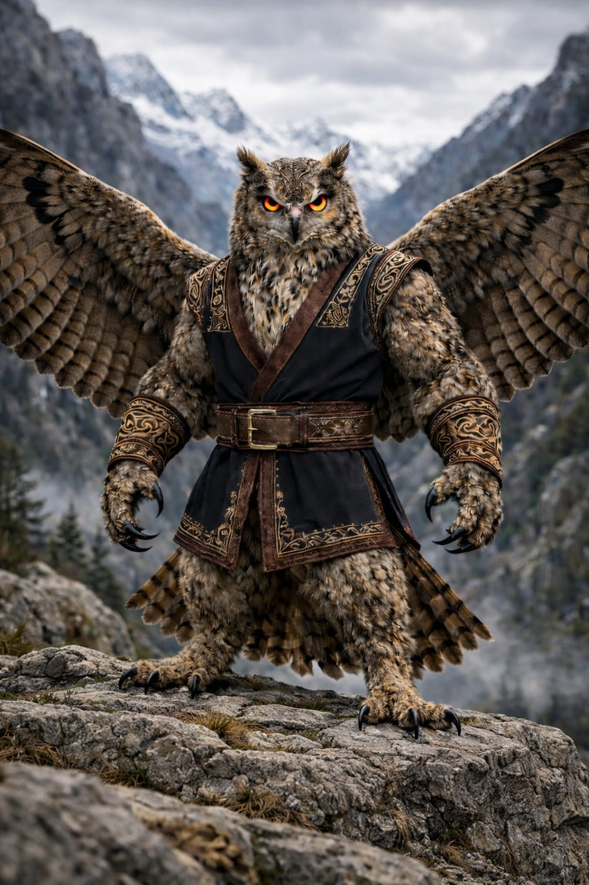

Eurasian Eagle-Owl
Bubo bubo
Region: Caucasus and Eurasia
Habitat: Rocky mountains, cliffs, ravines and rugged uplands
Martial Representation: Chidaoba
The Eurasian Eagle-Owl embodies crushing composure, close-range authority and disciplined physical control. Massive, steady and intimidating, it dominates exchanges through rooted balance, grip pressure and overwhelming presence rather than reckless speed. In combat, it thrives in clinch-heavy confrontations where structure and force decide the outcome.
Martial Discipline Overview
Chidaoba is a traditional Georgian wrestling style centered on balance breaking, throws and upright control. It emphasizes grip strength, posture, timing and decisive off-balancing rather than striking exchanges. Within WAFT, it enhances clinch dominance, defensive stability and standing grappling pressure.
Combat Attributes
Combat Abilities
Passive Ability
Circadian Cycle
Automatically alternates between Day and Night states.
During Day, Eurasian Eagle-Owl deals −50% damage, gains +50% Defense, suffers −25% Precision and −25% Evasion, and cannot use its Special Attack or Concentration.
During Night, it gains +50% damage, its attacks cannot be dodged, and it gains +25% Evasion.
Special Attack
Nocturnal Hunt
Can only be used during Night. Delivers an attack with all Night bonuses active and restores Life equal to the damage dealt.
Ultimate Charge: Defensive (3 hits)